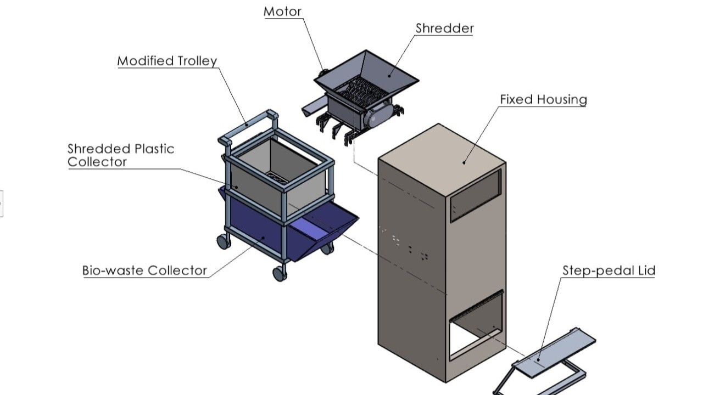
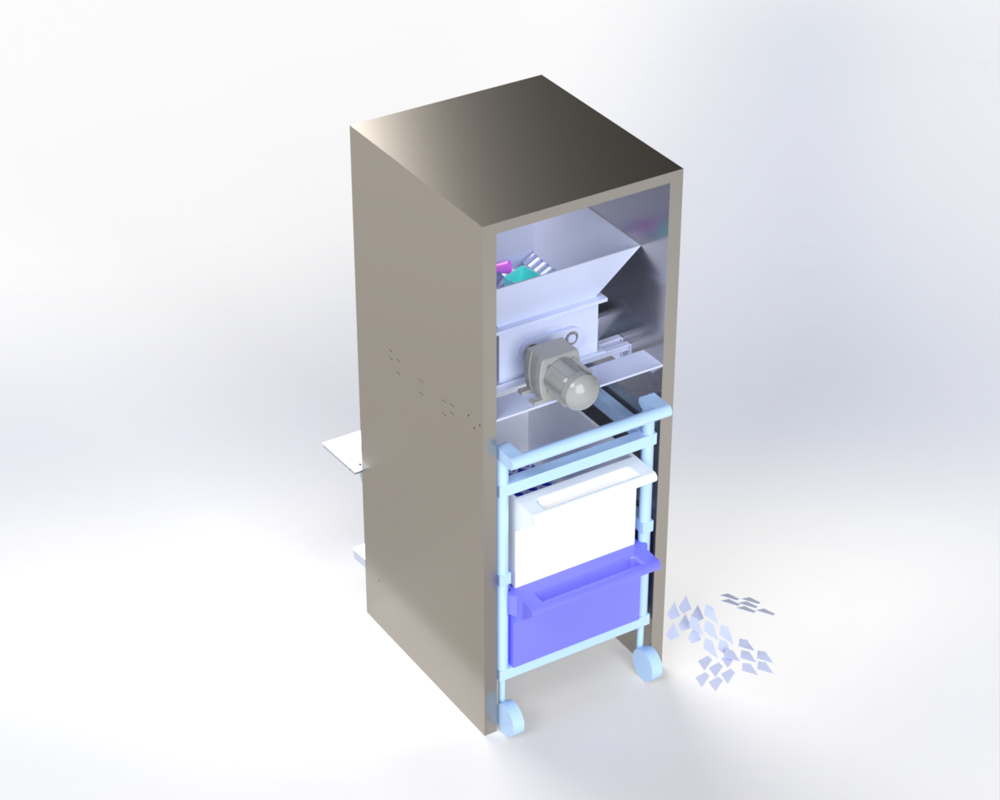
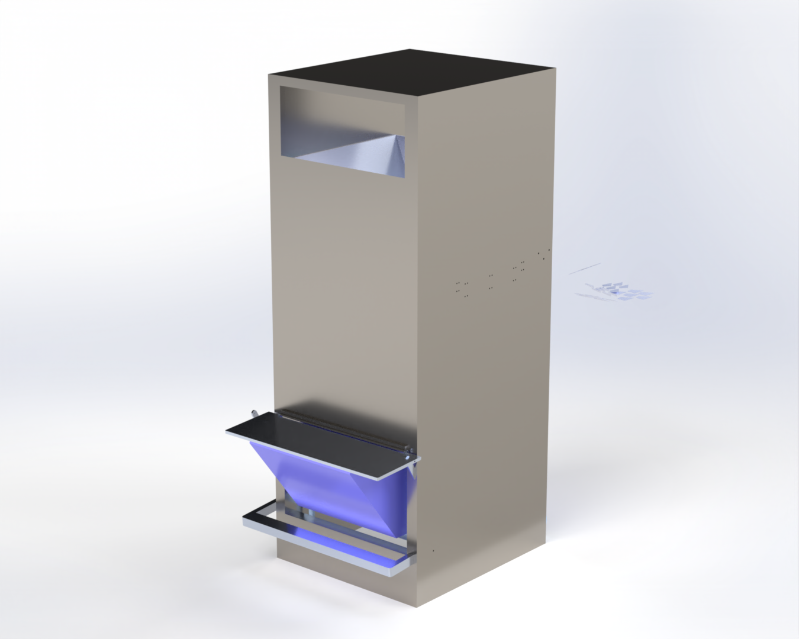
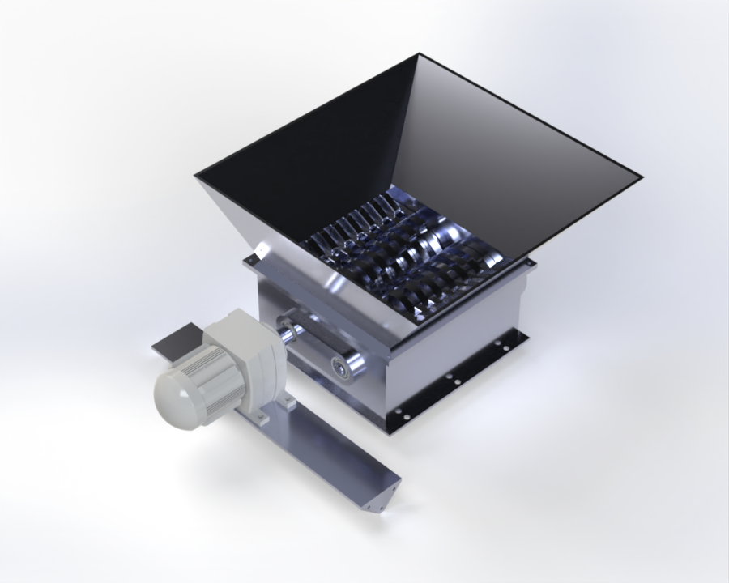
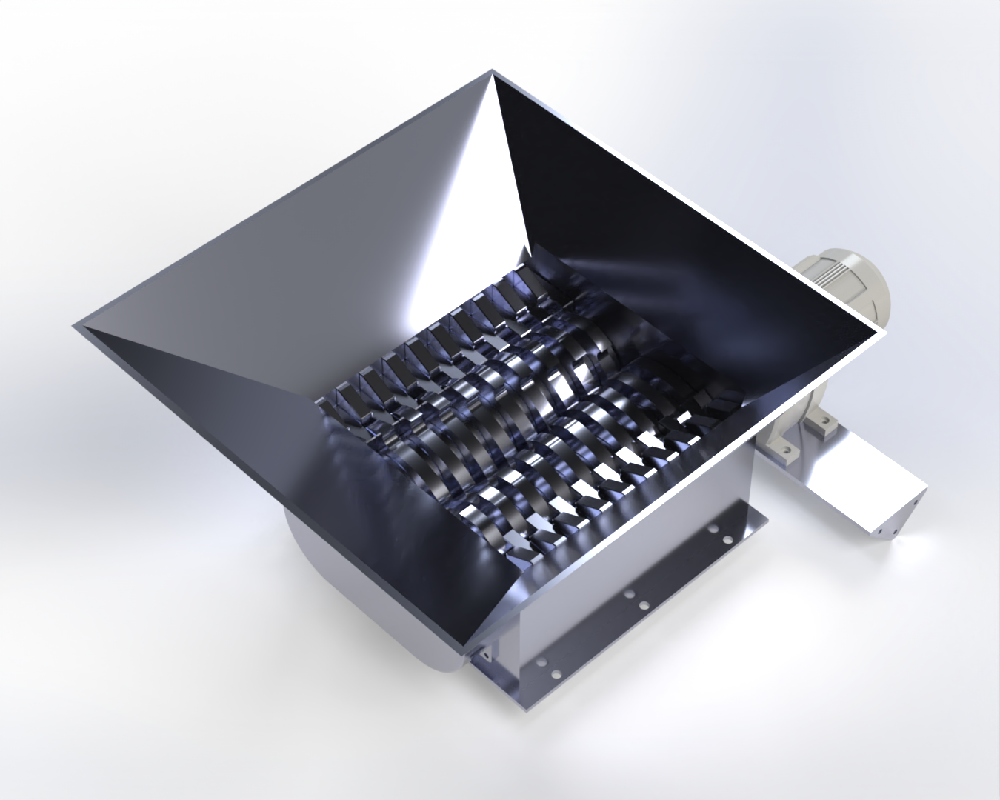
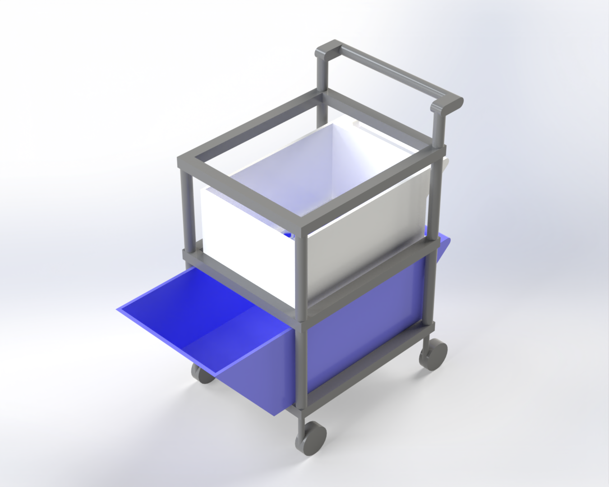
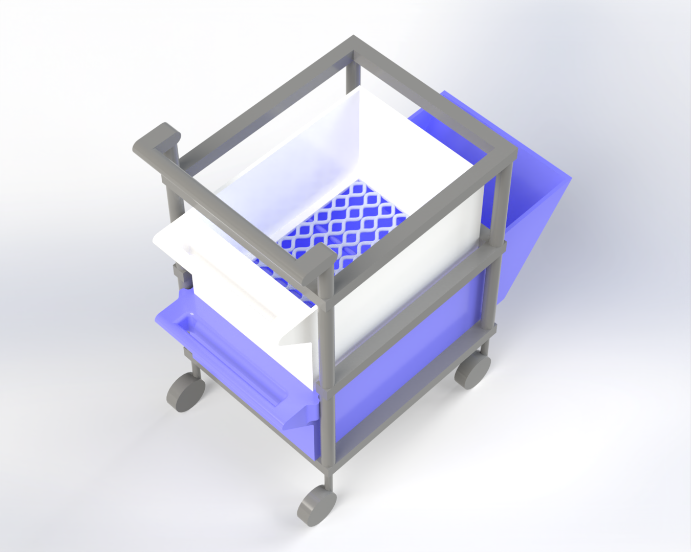
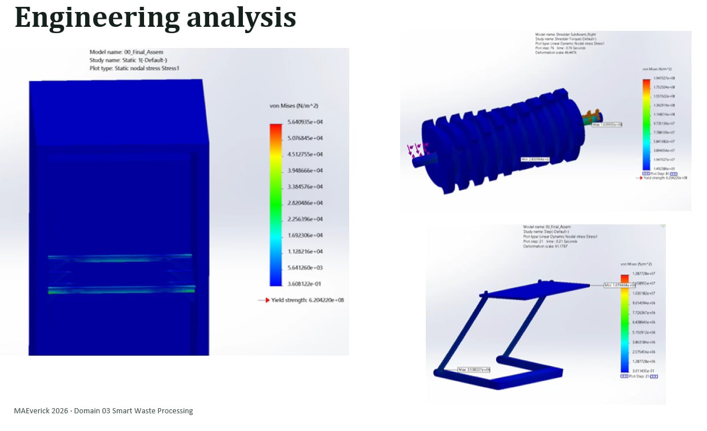
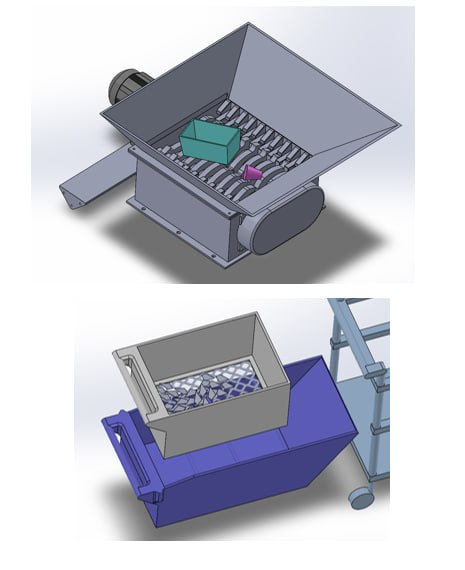

Tray return sorting and recycling
MAEverick 2026 - NTU
36 hour hackathon - Finished top 10

Problem - When my friends and I were returning our trays at Koufu, North Spine, we noticed that the tray return stations were constantly clustered with little to no space to put our trays especially duing peak hours.
Over 36 hours, my team MAE 人鱼 designed a sorting machine from scratch in SolidWorks. A motor-driven shredder separates plastic recyclables (disposable cups, containers, utensils, etc) from the liquid waste. The shreddered plastic is collected in a conatiner with a mesh at the bottom while the liquid drips into the food waste bin for recycling. We also did FEA on the pedal for the lid, shredder shaft, and its housing.
Final Assembly |
 |
Shredder Assembly |
 |
Trolley Assembly |
 |
FEA |
 |